6.1.2. Магнитная индукция
Напомним, что магнитное поле - вид материи, характеризующийся воздействием на движущиеся электрически заряженные частицы с силой, пропорциональной заряду этой частицы и её скорости. Магнитное поле в пустоте, воздухе и других немагнитных средах определяется во всех точках векторами магнитной индукция  (магнитного потока 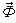) и напряжённости магнитного поля
(магнитного потока 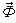) и напряжённости магнитного поля  , а в ферромагнитных материалах - векторами индукции
, а в ферромагнитных материалах - векторами индукции  , напряженности
, напряженности  и намагниченности 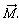
и намагниченности 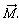
Магнитная индукция  - векторная величина, определяющая силу, действующую на движущуюся заряженную частицу со стороны магнитного поля в данной его точке. Магнитная индукция численно равна отношению силы 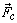, действующей на заряженную частицу, к произведению заряда q и составляющей скорости
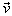 частицы, перпендикулярной к вектору силы, т. е. 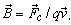
- векторная величина, определяющая силу, действующую на движущуюся заряженную частицу со стороны магнитного поля в данной его точке. Магнитная индукция численно равна отношению силы 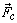, действующей на заряженную частицу, к произведению заряда q и составляющей скорости
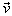 частицы, перпендикулярной к вектору силы, т. е. 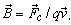
Силу, действующую на элемент длины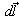 прямолинейного проводника с током, определяют по закону Ампера 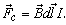 Откуда значение магнитной индукции
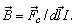 |
(6.1) |
|---|
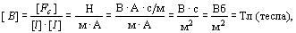
т. е. магнитная индукция 1 Тл равна силе, действующей на 1 м длины проводника с током в 1 А. Проводник располагают в равномерном магнитном поле перпендикулярно направлению вектора магнитной индукции.